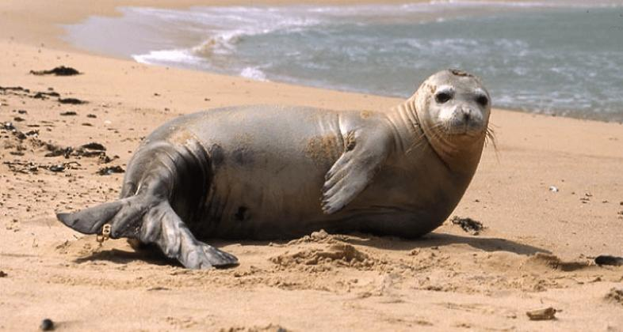

Información
Nombre científico
Monachus monachus
Extinción en Murcia
1979
Longitud
2-3 metros
Peso
250-400 kg
Descripción
Citada por primera vez en la Odisea de Homero, se han encontrado restos óseos de estas focas en cuevas de Málaga de hace más de 12000 años.
En 1979 se avistó por última vez en la Isla del Fraile de Águilas Murcia. La persecución fue tal que en los años 70 solo se conocían cinco ejemplares en las costas españolas; a comienzos de los 80 solo quedaba uno.
Además, está en grave peligro crítico de extinción y su única colonia estable se encuentra en Cabo Verde.